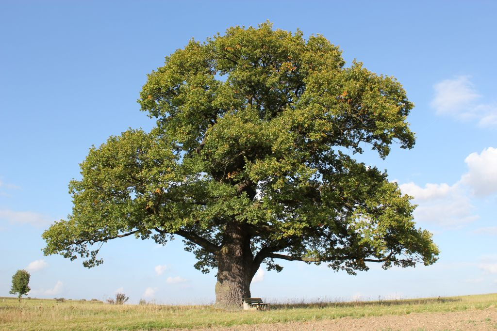
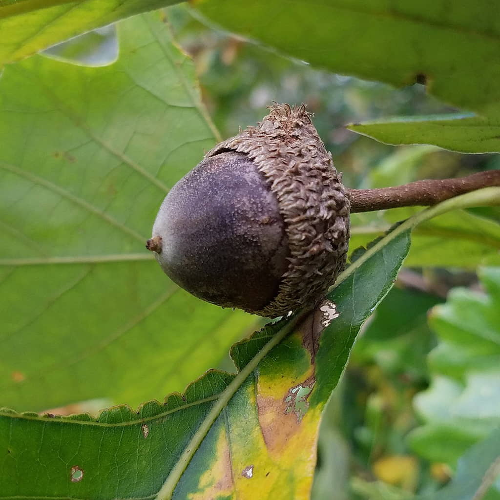

About Swamp White Oak (Quercus bicolor)

Summary
####Swamp white oak is a medium- to large-sized deciduous tree native to eastern and central North America, commonly found in floodplains, bottomlands, and other poorly drained sites. It is well adapted to seasonal flooding and heavy clay soils, grows at a moderate rate, and can live for several centuries. The species develops a broad, rounded crown and has distinctive leaves that are dark green above and pale beneath, with shallow lobes. Ecologically, swamp white oak is an important structural component of riparian and wetland forests, contributing to soil stability and floodplain resilience.
Identifying Features
The leaves of the swamp white oak are broadly obovate (tear drop shaped), with shallow rounded lobes. Coloration is dark green on top, with a pale/whitish underside.

The bark is a light gray-brown color, becoming scaly and flaky with age, often peeling in irrefular plates.

The acorns are large, oval and mature in one season. The caps are deep, and rough in texture often with a fuzzy or fringed edge, giving it a shaggy appearance.
{height = “300px}
Ecological Services
Swamp white oaks provide critical ecological services in floodplain and wetland ecosystems, as their deep and vast root systems stabilize soils in vulnerable areas. This reduces erosion along streambeds and other low-lying areas. They provide hydrologic regulation by slowing runoff and enhancing water filtration. They are long-lived and large-canopied trees, meaning they contribute to carbon storage, local climate moderaation and the overall structure of a riparian forest environment.
Animal Uses and Relationships
- Swamp white oak produces large acorns ate by many wildlife species including deer, squirrels, turkey and other birds.
- The leaves host a wide variety of native insects, including caterpillars.
- The large and broad canopy provides numerous nesting sites, cover and shelter for birds and small mammals
- White-tailed deer commonly browse young twigs and shoots in winter and early spring.
Fun Facts
- A swamp white oak can live for several hundred years, making it a long-term fixture in flooplain forests.
- Swamp white oak is one of the most flood-tolerant oaks and can survive weeks in standing water.
- Swamp white oak is considered one of the toughest native oaks for urban planting, as it is tolerant of compacted conditions, road salt and variable moisture than most other oak species.
Indigenous History/Uses
- Due to its strength and durability, the wood was used for practical purposes such as tools, implements and structural elements.
- Acorns were leached to remove bitterness and then ground into meal, however this was more typically done with upland oak species.
- The bark and inner bark were sometimes used in traditional medicine, particularly for treating inflammation, skin conditions or digestion. This medicinal use was use broadly across many oak species.
Conservation
Swamp white oak is considered secure across most of its native range. Populations remain widespread and stable.
References
USDA, NRCS. (2024). Quercus bicolor Willd. Swamp white oak. The PLANTS Database. U.S. Department of Agriculture. https://plants.usda.gov
NatureServe. (2023). Quercus bicolor. NatureServe Explorer. https://explorer.natureserve.org Flora of North America Editorial Committee. (1997). Quercus bicolor. In Flora of North America North of Mexico (Vol. 3). https://floranorthamerica.org/Quercus_bicolor
Missouri Botanical Garden. (n.d.). Quercus bicolor (swamp white oak). Plant Finder. https://www.missouribotanicalgarden.org
U.S. Forest Service. (n.d.). Swamp white oak (Quercus bicolor). Silvics of North America. https://www.fs.usda.gov